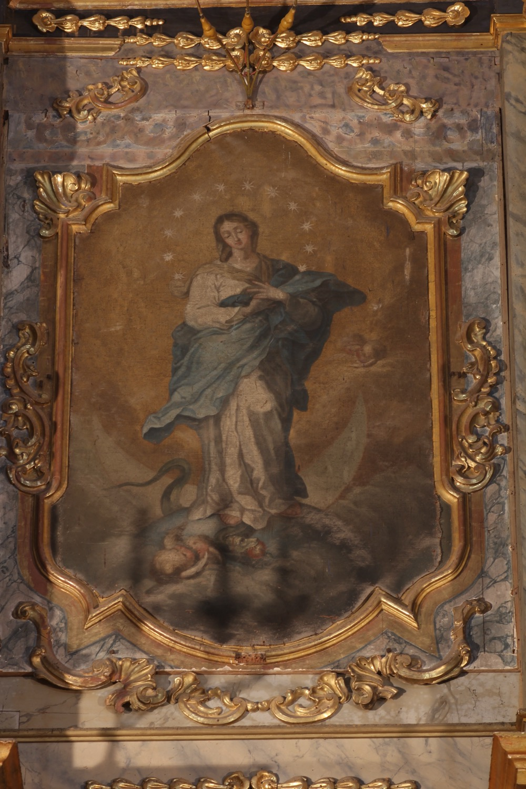

La Immaculada Concepció és el dogma de l’Església Catòlica que afirma que la Verge Maria va ser concebuda sense pecat original per la gràcia de Déu, cosa que la preparà per ser la Mare de Déu. Aquest dogma fou proclamat l’any 1854 pel papa Pius IX, després de molts segles de debat teològic. A Mallorca, aquesta advocació de la Verge Maria també és coneguda com la Puríssima.
Aquesta pintura de la Puríssima, inspirada en els models popularitzats per Murillo, la representa vestida amb túnica blanca i mantell blau, símbols de puresa i celestialitat, respectivament, i amb les mans juntes en actitud de pregària. L’aureola de dotze estrelles que la corona i la lluna al darrera fan referència al llibre de l’Apocalipsi, on s’anuncia l’aparició d’una dona vestida amb el sol, amb la lluna sota els peus i una corona de dotze estrelles al cap. La seva representació trepitjant una serp amb una poma a la boca sobre el globus terraqüi simbolitza la seva victòria sobre el pecat original i el mal que amenacen la Terra.